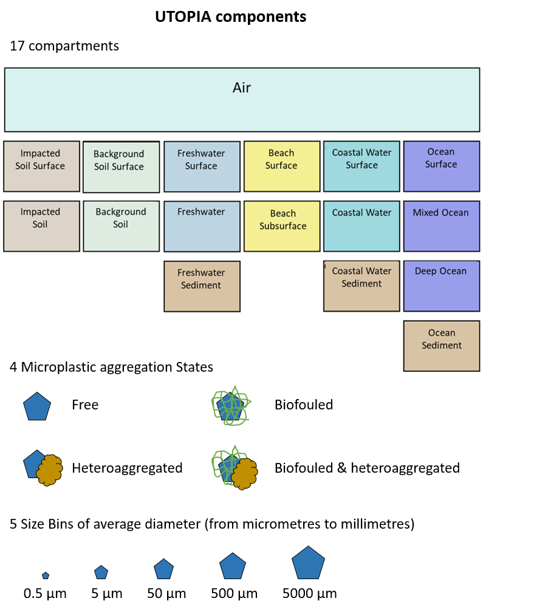

ABOUT THE PROJECT
The UTOPIA web app is an interactive tool that enables users to explore the fate of microplastics across environmental compartments interactively within a unit world framework.
The User can select Microplastic properties as well and design emission scenarios via selection of the receiving compartment of emissions, selecting a flow of emissions and the size and microplastic aggregation state for emission.
ABOUT THE MODEL
UTOPIA is an open-source evaluative unit world model that has been developed within the LRI ECO56 project UTOPIA: Development of a multimedia unit world Open-source model for microplastic. (link to the original project).
UTOPIA is a platform to synthesize knowledge and understanding about the fate of microplastics in the environment. The model comprises 17 environmental compartments that cover the air, different types of soils, water, and sediments. It classifies plastics into five size bins, ranging from nano to millimeters, and monitors four speciation states (free, heteroaggregated, biofouled and biofouled and heteroaggregated) of these particles.
The model computes the steady-state distribution of microplastic masses and particle numbers across all compartments, size bins, and speciation states, and provides MP-relevant exposure metrics such as Overall Persistence, Overall Residence tim,e and Long-range transport potential metrics.
The image below shows the foundational elements of the Utopia model.
About the Researchers
Curabitur aliquet, ipsum a dapibus tincidunt, justo eros viverra quam, sed pulvinar ex erat id velit. Nulla facilisi. Nullam non orci nec nulla pulvinar rutrum.
Development Team
Sed condimentum, sapien a finibus vehicula, est libero congue urna, non aliquet libero elit in ex. Aliquam erat volutpat. Vestibulum ante ipsum primis in faucibus orci luctus et ultrices posuere cubilia curae.
Funding & Research Infrastructure
Praesent ut neque at enim gravida aliquam. Phasellus sit amet nisl rutrum, dapibus orci nec, placerat nisl. Integer eu faucibus eros, at euismod urna.